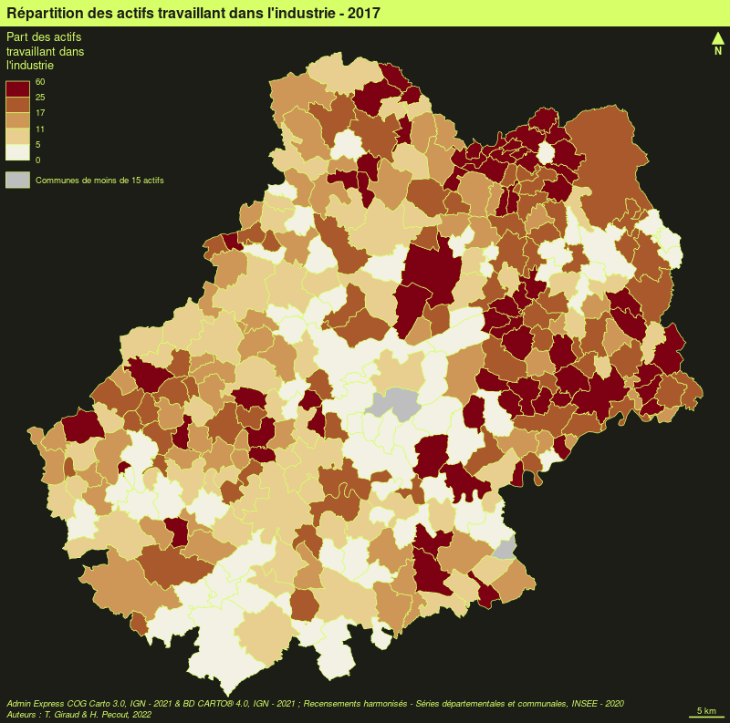

L’écosystème spatial du logiciel libre R est riche, dynamique et mature et plusieurs packages permettent d’importer, de traiter et de représenter les données spatiales. Le package mapsf(Giraud, 2021) s’appuie sur cet écosystème pour intégrer la création de cartes thématiques de qualité dans les chaînes de traitement avec R.
D’autres packages peuvent être utilisés pour réaliser des cartes thématiques. Le package ggplot2(Wickham, 2016), en association avec le package ggspatial(Dunnington, 2021), permet par exemple d’afficher des objets spatiaux et de réaliser des cartes thématiques simples. Le package tmap(Tennekes, 2018) est dédié à la création de cartes thématiques, il utilise une syntaxe proche de celle de ggplot2 (enchaînement d’instructions combinées avec le signe ‘+’). La documentation et les tutoriels pour utiliser ces deux packages sont facilement accessibles sur le web.
Ici, nous utiliserons principalement le package mapsf dont les fonctionnalités sont assez complètes et la prise en main plutôt simple. De plus, le package est relativement léger.
3.1mapsf
mapsf permet de créer la plupart des types de carte utilisés habituellement en cartographie statistique (cartes choroplèthes, typologies, symboles proportionnels ou gradués…).
Pour chaque type de carte, plusieurs paramètres permettent de personnaliser la représentation cartographique. Ces paramètres sont les mêmes que ceux que l’on retrouve dans les logiciels de SIG ou de cartographie usuels (par exemple, le choix des discrétisations et des palettes de couleurs, la modification de de la taille des symboles ou la personnalisation des légendes).
Associées aux fonctions de représentation des données d’autres fonctions sont dédiées à l’habillage cartographique (thèmes ou chartes graphiques, légendes, échelles, flèches d’orientation, titre, crédits, annotations…), à la création de cartons ou à l’export des cartes. mapsf est le successeur de cartography(Giraud et Lambert, 2018), il offre les mêmes fonctionnalités principales tout en étant plus léger et plus ergonomique.
Pour utiliser ce package plusieurs sources de documentation peuvent être consultées.
La documentation du package accessible sur internet ou directement dans R (?mapsf).
Les vignettes associées au package présentent des exemples de scripts.
Le blog R Géomatique qui met à disposition ressources et exemples liés au package et plus généralement à l’écosystème spatial de R.
3.2 Les types de cartes
La fonction mf_map() est la fonction centrale du package mapsf. Elle permet de réaliser la plupart des représentations usuelles en cartographie. Ces arguments principaux sont :
x, un objet sf ;
var, le nom de la variable à représenter ;
type, le type de représentation.
3.2.1 Les données d’exemple
Les lignes suivantes importent les couches d’information spatiales situées dans le fichier geopackagelot46.gpkg.
library(sf)
#> Linking to GEOS 3.9.0, GDAL 3.2.2, PROJ 7.2.1; sf_use_s2() is TRUE
# import des communes du Lotcom <-st_read("data/lot46.gpkg", layer ="commune", quiet =TRUE)# import des départments françaisdep <-st_read("data/lot46.gpkg", layer ="departement", quiet =TRUE)# import des restaurantsresto <-st_read("data/lot46.gpkg", layer ="restaurant", quiet =TRUE)# import des routesroute <-st_read("data/lot46.gpkg", layer ="route", quiet =TRUE)
3.2.2 Afficher un fond de carte
Utilisée sans précision de type, la fonction mf_map() affiche simplement le fond de carte.
Les cartes de symboles proportionnels sont utilisées pour représenter les variables de stocks (variables quantitatives absolues, la somme et la moyenne ont un sens). La fonction mf_map(..., type = "prop") propose cette représentation.
# Communesmf_map(x = com)# Symboles proportionnelsmf_map(x = com, var ="POPULATION",type ="prop",leg_title ="Population totale\n(2015)")# Titremf_title("Distribution de la population dans le Lot")
3.2.3.1 Comparer plusieurs cartes
Il est possible de fixer les dimensions du plus grand symbole correspondant à une certaine valeur avec les arguments inches et val_max. Nous pouvons ainsi construire des cartes en symboles proportionnels comparables.
# Afficher deux cartes en vis-à-vispar(mfrow =c(1,2))# Communesmf_map(x = com, border ="grey90", lwd = .5)# Population active occupée dans l'industrie, les hommesmf_map(x = com, var ="IND_H", type ="prop", inches = .2, val_max =600, leg_title ="Hommes", leg_val_cex = .5,)# ajout d'un titremf_title("Population active occupée dans l'industrie")# Communesmf_map(x = com, border ="grey90", lwd = .5)# Population active occupée dans l'industrie, les femmesmf_map(x = com, var ="IND_F", type ="prop",inches = .2, val_max =600, leg_title ="Femmes", leg_val_cex = .5)# ajout d'un titremf_title("Population active occupée dans l'industrie")
Les cartes choroplèthes sont utilisées pour représenter les variables de ratios (variables quantitatives relatives, la moyenne a un sens, la somme n’a pas de sens).
Pour ce genre de représentation il faut au préalable :
choisir une méthode de discrétisation pour transformer une série statistique continue en classes définies par des intervalles,
choisir un nombre de classes,
choisir une palette de couleurs.
La fonction mf_map(..., type = "choro") permet de créer des cartes choroplètes. Les arguments nbreaks et breaks servent à paramétrer les discrétisations, et la fonction mf_get_breaks() permet de travailler sur les discrétisations en dehors de la fonction mf_map(). De même, l’argument pal est utilisé pour renseigner une palette de couleur, mais plusieurs fonctions peuvent être utilisées pour paramétrer les palettes en dehors de la fonction (mf_get_pal…).
# Densité de population (hab./km2) en utilisant la fonction sf::st_area()com$DENS <-1e6* com$POP /as.numeric(st_area(com))mf_map(x = com,var ="DENS",type ="choro",breaks ="quantile",pal ="Dark Mint",lwd =1,leg_title ="Densité de population\n(habitants par km2)", leg_val_rnd =0)mf_title("Distribution de la population dans le Lot (2018)")
3.2.4.1 Discrétisations
La fonction mf_get_breaks() met à disposition les méthodes de discrétisations de variables classique : quantiles, moyenne/écart-type, amplitudes égales, moyennes emboîtées, Fisher-Jenks, géométrique …
L’argument pal de mf_map() est dédié au choix d’une palette de couleur. Les palettes fournies par la fonction hcl.colors() peuvent être utilisées directement.
mf_map(x = com, var ="SHARE_ACT", type ="choro",breaks = d4, pal ="Blues 3")
La fonction mf_get_pal() permet de construire une palette de couleur. Cette fonction est surtout utile pour créer des palettes divergentes asymétriques équilibrées.
Il est possible d’utiliser ce mode de représentation en implémentation ponctuelle également.
com_c <-st_centroid(com)
#> Warning in st_centroid.sf(com): st_centroid assumes attributes are constant over
#> geometries of x
mf_map(com)mf_map(x = com_c,var ="DENS",type ="choro",breaks ="quantile",nbreaks =4,pal ="Dark Mint",pch =24,cex =2,border ="white",lwd = .7,leg_pos ="topleft",leg_title ="Densité de population\n(habitants par km2)", leg_val_rnd =0, add =TRUE)mf_title("Distribution de la population dans le Lot (2018)")
3.2.5 Carte de typologie
Les cartes de typologies sont utilisées pour représenter les variables qualitatives.
La fonction mf_map(..., type = "typo") propose cette représentation.
Quand l’implantation de la couche est ponctuelle, des symboles sont utilisés pour porter les couleurs de la typologie.
# extraction des centroides de la préfectures et des sous-préfecturescom_ctr <-st_centroid(com[com$STATUT !="Commune simple", ])
#> Warning in st_centroid.sf(com[com$STATUT != "Commune simple", ]): st_centroid
#> assumes attributes are constant over geometries of x
mf_map(com)mf_map(x = com_ctr, var ="STATUT", type ="typo", cex =3, pch =23, pal =c("aquamarine4", "yellow3"),leg_title ="", add =TRUE)mf_title("Statut Administratif")
3.2.5.3 Les cartes de lignes
# Sélection des routes qui intersectent la commune de Cahorscahors <- com[com$NOM_COM =="Cahors", ]route_cahors <- route[st_intersects(x = route, y = cahors, sparse =FALSE), ]mf_map(cahors)mf_map(x = route_cahors,var ="VOCATION",type ="typo", lwd =2,pal =mf_get_pal(n =4, "Dark 2"),leg_title ="Type de route",add =TRUE)mf_title("Statut Administratif")
3.2.6 Carte de stocks et de ratios
La fonction mf_map(..., var = c("var1", "var2"), type = "prop_choro") représente des symboles proportionnels dont les surfaces sont proportionnelles aux valeurs d’une variable et dont la couleur repose sur la discrétisation d’une seconde variable. La fonction utilise les arguments des fonctions mf_map(..., type = "prop") et mf_map(..., type = "choro").
La fonction mf_map(..., var = c("var1", "var2"), type = "prop_typo") représente des symboles proportionnels dont les surfaces sont proportionnelles aux valeurs d’une variable et dont la couleur représente les modalités d’une variable qualitative. La fonction utilise les arguments des fonctions mf_map(..., type = "prop") et mf_map(..., type = "typo").
Pour être finalisée, une carte thématique doit contenir certains éléments additionnels tels que : le titre, l’auteur, la source, l’échelle, l’orientation…
3.3.1 Les thèmes
La fonction mf_theme() défini un thème cartographique. L’utilisation d’un thème permet de définir plusieurs paramètres graphiques qui sont ensuite appliqués aux cartes créées avec mapsf. Ces paramètres sont : les marges de la carte, la couleur principale, la couleur de fond, la position et l’aspect du titre. Un thème peut également être défini avec les fonctions mf_init() et mf_export().
3.3.1.1 Utiliser un thème prédéfini
Une série de thèmes prédéfinis est disponible par défaut (voir ?mf_theme).
library(mapsf)# utilisation d'une couleur de fond pour la figure, pour voir l'utilisation des margesopar <-par(mfrow =c(2,2))# Utilisation d'un thème prédéfinimf_theme("default")mf_map(com)mf_title("Theme : 'default'")mf_theme("darkula")mf_map(com)mf_title("Theme : 'darkula'")mf_theme("candy")mf_map(com)mf_title("Theme : 'candy'")mf_theme("nevermind")mf_map(com)mf_title("Theme : 'nevermind'")par(opar)
3.3.1.2 Modifier un thème existant
Il est possible de modifier un thème existant. Dans cet exemple, nous utilisons le thème “default” et nous en modifions quelques paramètres.
mf_theme(bg ="lightblue", # couleur de fondfg ="tomato1", # couleur principalemar =c(0,0,1.5,0), # margestab =FALSE, # style "onglet" pour le titreinner =FALSE, # titre à l'intérieur de la zone de carte ou à l'extérieurline =1.5, # espace dédié au titrepos ="center", # position du titrecex =1.2, # taille du titrefont =2# type de fonte pour le titre)mf_map(com)mf_title("New theme")
3.3.2 Les titres
La fonction mf_title() permet d’ajouter un titre à une carte.
mf_theme("default")mf_map(com)mf_title("Titre de la carte")
Il est possible de personnaliser l’aspect du titre.
mf_map(com)mf_title(txt ="Titre de la carte", pos ="center", tab =FALSE, bg ="tomato3", fg ="lightblue", cex =1, line =1.2, font =1, inner =FALSE)
3.3.3 Flèche d’orientation
La fonction mf_arrow() permet de choisir la position et l’aspect de la flèche d’orientation.
mf_map(com)mf_arrow()
3.3.4 Échelle
La fonction mf_scale() permet de choisir la position et l’aspect de l’échelle.
mf_map(com)mf_scale(size =20,lwd =2,cex =1.2,)
3.3.5 Crédits
La fonction mf_credits() permet d’afficher une ligne de crédits (sources, auteur…).
L’argument halo = TRUE permet d’afficher un léger halo autour des étiquettes et l’argument overlap = FALSE permet de créer des étiquettes ne se recouvrant pas.
3.3.10 Centrer la carte sur une région
La fonction mf_init() permet d’initialiser une carte en la centrant sur une objet spatial.
3.3.11 Afficher plusieurs cartes sur la même figure
Il faut ici utiliser l’argument mfrow de la fonction par(). Le premier chiffre représente le nombre lignes et le deuxième le nombre de colonnes.
# define the figure layout (1 row, 2 columns)par(mfrow =c(1, 2))# define thememf_theme("default", mar =c(0,0,1.2,0), tab =FALSE, pos ="center")# first mapmf_map(com)mf_map(com, "TER_F", "prop", val_max =4000, leg_pos ="topleft", leg_title ="N.")mf_title("Tertiaire: Femmes")# second mapmf_map(com)mf_map(com, "TER_H", "prop", val_max =4000, leg_pos =NA)mf_title("Hommes")
3.3.12 Export des cartes
Il est assez difficile d’exporter des figures (cartes ou autres) dont le ratio hauteur/largeur est satisfaisant. Le ratio par défaut des figures au format png est de 1 (480x480 pixels) :
mf_theme("candy", bg ="grey80")c2c <- com[com$INSEE_COM =="46138", ]png("img/c2c1.png")mf_map(c2c)mf_title("Cœur de Causse")dev.off()
Sur cette carte beaucoup d’espace est perdu au nord et au sud de la commune.
La fonction mf_export() permet des exports de cartes dont le ratio hauteur/largeur est contrôlé et correspond à celui d’un objet spatial.
mf_theme("candy", bg ="grey80")mf_export(c2c, "img/c2c2.png", width =480)mf_map(c2c)mf_title("Cœur de Causse")dev.off()
L’emprise de cette carte est exactement celle de la région affichée.
3.3.13 Ajouter une image sur une carte
Cela peut être utile pour ajouter un logo, un pictogramme. La fonction readPNG() du package png permet l’ajout d’images sur une figure.
mf_theme("default", mar =c(0,0,0,0))library(png)# import de l'imagelogo <-readPNG("img/Logo CG 46 - Bleu.png")# dimension de l'image en unité de la cartepp <-dim(logo)[2:1] *20# Définition d'un point d'encrage de l'image dans la figure, ici# le coin supérieur gauche de la bounding box du départementxy <-st_bbox(com)[c(1,4)]mf_map(com, col ="#D1914D", border ="white")rasterImage(image = logo,xleft = xy[1],ybottom = xy[2] - pp[2],xright = xy[1] + pp[1],ytop = xy[2])
3.3.14 Ajouter un ombrage à une couche
La fonction mf_shadow() permet de créer une ombre à une couche de polygones.
mf_shadow(com)mf_map(com, add=TRUE)
3.3.15 Création de cartons
La fonction mf_inset_on() permet de démarrer la création d’un carton. Il faut ensuite “refermer” le carton avec mf_inset_off().
Créez une carte représentant la population active travaillant dans l’industrie.
Ajoutez les éléments d’habillage indispensables.
Utilisez un thème personnalisé.
Ajoutez un carton de localisation du Lot
Exportez la carte au format PNG avec 800 pixels de large.
Comment rendre la carte plus intelligible ? Allez-y !
library(mapsf)# import des communes du Lotcom <-st_read("data/lot46.gpkg", layer ="commune", quiet =TRUE)# import des départments françaisdep <-st_read("data/lot46.gpkg", layer ="departement", quiet =TRUE)# Nombre total d'actifscom$ACT <- com$AGR_H + com$AGR_F + com$IND_H + com$IND_F + com$BTP_H + com$BTP_F + com$TER_H + com$TER_F# Nombre d'actifs dans l'industriecom$IND <- com$IND_F + com$IND_H# Part des actifs travaillant dans l'industriecom$PART_ACT_IND <-100* com$IND / com$ACT# Création d'un thème personnaliséth <-mf_theme("green", mar =c(0,0,1.5,0), pos ="left")# Cartographie du nombre total de travailleurs de l'industriemf_export(com, "img/n_ind.png", theme = th,width =800)mf_map(x = com, border ="white", lwd = .2, add = T)mf_map(x = dep, lwd =1, col =NA, add =TRUE, lend =0)mf_map(x = com, var ="IND", type ="prop",leg_title ="Nombre d'actifs\ntravaillant dans\nl'industrie")mf_title("Répartition des actifs travaillant dans l'industrie - 2017")mf_scale(5)mf_arrow(pos ="topright")# notez l'utilisation ici de paste0() qui permet de concatener des chaines# de caractères et de \n qui permet d'aller à la lignemf_credits(paste0("Admin Express COG Carto 3.0, IGN - 2021 & ","BD CARTO® 4.0, IGN - 2021 ; Recensements harmonisés - ","Séries départementales et communales, INSEE - 2020\n","Auteurs : T. Giraud & H. Pecout, 2022"))dev.off()
#> png
#> 2
# Cartographie de la part des actifs travaillant dans l'industrie## Quelle est la forme de la distribution que nous voulons cartographier ?hist(com$PART_ACT_IND)
boxplot(com$PART_ACT_IND, horizontal =TRUE)
summary(com$PART_ACT_IND)
#> Min. 1st Qu. Median Mean 3rd Qu. Max.
#> 0.000 7.407 14.286 16.282 23.077 100.000
#### > Seules 2 communes ont 100% de travailleurs dans l'industrie#### Ces communes ont moins de 15 actifs# Sélection des communes ayant plus de 15 actifscom_sel <- com[com$ACT >15, ]## Quelle est la forme de cette (nouvelle) distributionhist(com_sel$PART_ACT_IND)
boxplot(com_sel$PART_ACT_IND, horizontal =TRUE)
summary(com_sel$PART_ACT_IND)
#> Min. 1st Qu. Median Mean 3rd Qu. Max.
#> 0.000 7.408 14.286 15.783 22.466 60.000
# Creation d'un vecteur contenant les limites de classes en# utilisant la méthode des quantilesbks <-mf_get_breaks(com_sel$PART_ACT_IND, nbreaks =5,breaks ="quantile")hist(com_sel$PART_ACT_IND, bks)
mf_export(com, "img/s_ind.png", theme = th,width =800)# Cartographiemf_map(x = com,var ="PART_ACT_IND",type ="choro",breaks = bks, # Utilisation des bornes de classes créées précédementleg_val_rnd =0, # arrondir les valeurs dans la légendepal ="Red-Yellow", # Utilisation d'une palette de couleurleg_title ="Part des actifs\ntravaillant dans\nl'industrie",add =TRUE,col_na ="grey",leg_no_data ="Communes de moins de 15 actifs") # texte du no data dans la légendemf_title("Répartition des actifs travaillant dans l'industrie - 2017")mf_scale(5)mf_arrow(pos ="topright")mf_credits(paste0("Admin Express COG Carto 3.0, IGN - 2021 & ","BD CARTO® 4.0, IGN - 2021 ; Recensements harmonisés - ","Séries départementales et communales, INSEE - 2020\n","Auteurs : T. Giraud & H. Pecout, 2022"))dev.off()
#> png
#> 2

Nous allons maintenant combiner le nombre total d’actifs et la parts des travailleurs de l’industrie.
mf_export(com, "img/c_ind.png", theme = th,width =800)mf_map(x = com, border ="white", lwd = .2, add = T)mf_map(x = dep, lwd =1, col =NA, add =TRUE, lend =0)mf_map(com, c("ACT", "PART_ACT_IND"), "prop_choro",breaks = bks,pal ="Red-Yellow",inches = .4,border ="white", lwd = .7,leg_val_rnd =c(0,1),leg_pos =c(538000,6442000, 538000, 6424000), # ici les légendes sont positionnées manuellementleg_title =c("Nombre d'actifs*","Part des actifs\ndans l'industrie (en %)"),col_na ="grey",leg_no_data ="Communes de moins de 15 actifs")# Ajout d'annotationsmf_annotation(x = com[com$NOM_COM=="Biars-sur-Cère",],txt ="Andros",col_arrow = th$fg, halo = T, cex =1)mf_annotation(x = com[com$NOM_COM=="Figeac",],txt ="Industrie\naéronautique",col_arrow = th$fg, pos ="bottomright", halo = T, cex =1)mf_annotation(x = com[com$NOM_COM=="Gramat",],txt ="La Quercynoise (?)",col_arrow = th$fg, pos ="topleft", s =1, halo = T,cex =1)mf_title("Répartition des actifs travaillant dans l'industrie - 2017")# ajout d'un carton ->mf_inset_on(fig =c(.8,0.98,0.1,0.3))mf_map(dep, lwd = .1)mf_map(com, border =NA, add = T, col = th$fg)box(col = th$fg, lwd = .5)mf_inset_off()# <- fin du cartonmf_scale(5)mf_arrow("topright")mf_credits(paste0("Admin Express COG Carto 3.0, IGN - 2021 & ","BD CARTO® 4.0, IGN - 2021 ; Recensements harmonisés - ","Séries départementales et communales, INSEE - 2020\n","Auteurs : T. Giraud & H. Pecout, 2022"))dev.off()